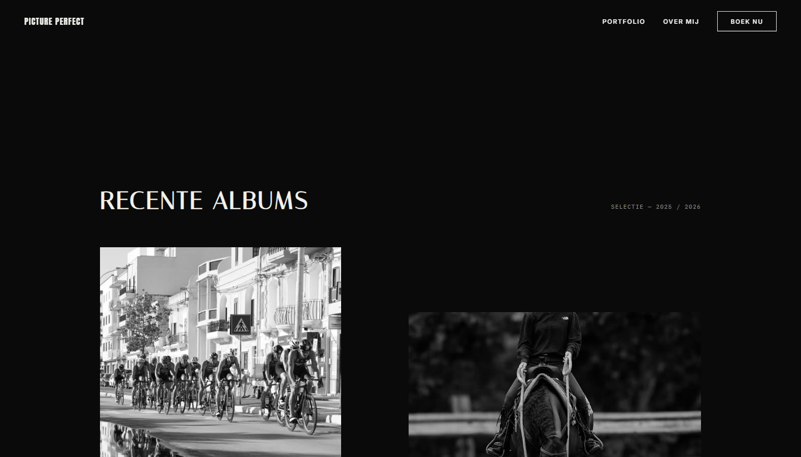
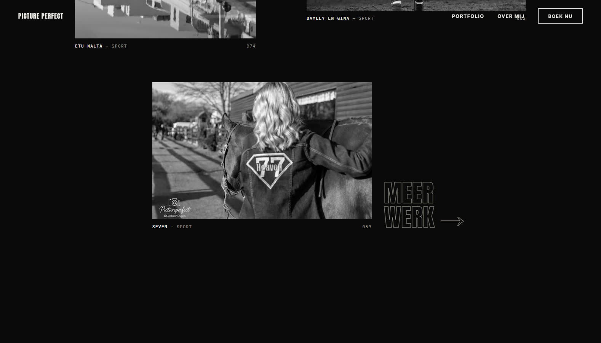
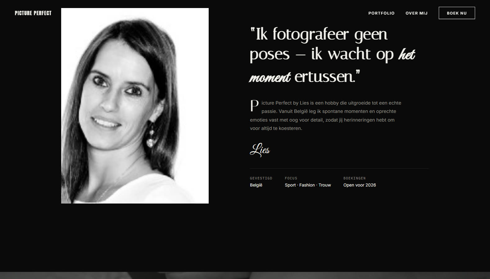
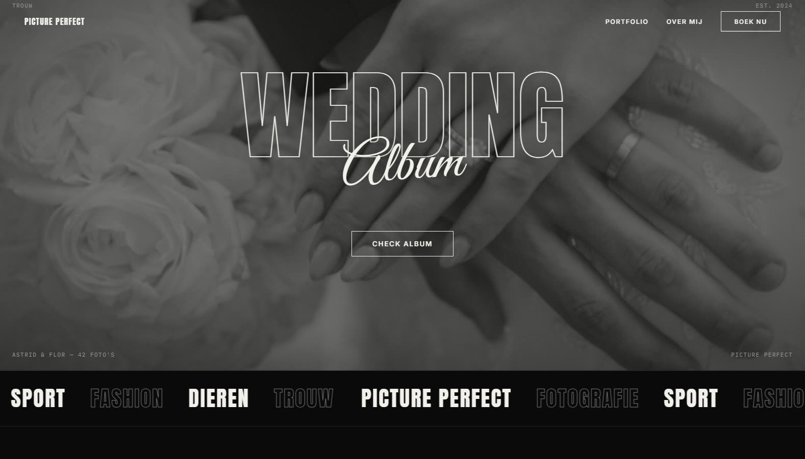

The brief
A photographer is judged on their images, so the website had to get out of the way. The brief was a portfolio that feels editorial and confident, shows the range of the work without turning into a wall of thumbnails, and makes booking a shoot effortless.
The look
Strict black and white, oversized condensed type and a split hero: the wordmark on one side, a striking photograph on the other. The high contrast keeps the focus on the photography and gives the whole site a gallery feel, while a handwritten accent keeps it personal rather than corporate.

Structure over clutter
Rather than dumping every photo on one page, the work is split into numbered categories, each showing how many albums and photos sit behind it. Visitors pick the thing they came for and land straight in it, which keeps the homepage calm and makes a large archive feel navigable.

The person behind the lens
Hiring a photographer is a personal decision, so the about section leads with a portrait and a pull quote in the photographer's own words, with the practical details, specialisation, focus and availability, sitting right beside it. It answers the "who am I working with" question before the visitor has to ask.

Motion & flow
Smooth, inertia-based scrolling ties the sections together and images reveal as they enter the frame, so the page feels like it is being presented rather than loaded. A recent albums grid keeps the site looking current, and a booking button stays within reach the whole way down.

The result
A portfolio that reads like a magazine spread, loads fast because it is hand coded, and works just as well on a phone. The photography stays the star, and the clear route to booking turns browsing into enquiries.